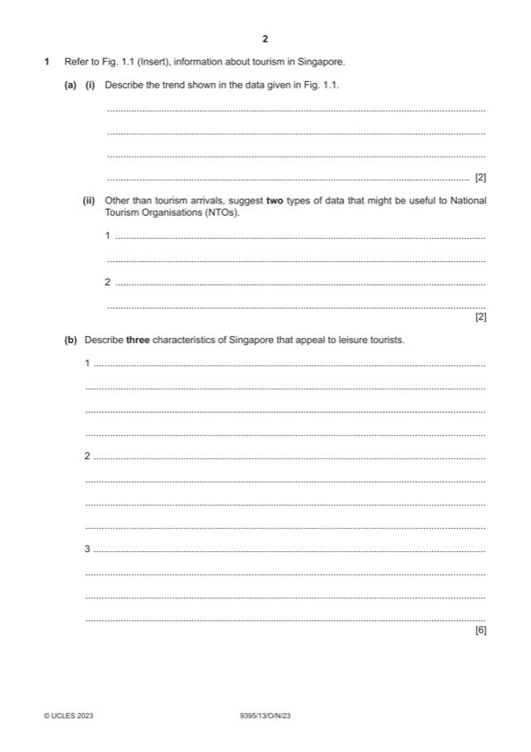

Question 1

Original paper page 2
Part 1 — solution
Question 1 refer to Fig. 1.1. (Insert), information about tourism in
Singapore.
Mark points
- Include the ideas shown in the solution above.
Part 1(a)(i) — solution
Describe the trend shown in the data given in Fig.1.1. 2
Award up to two marks for the description. If there is a lack of figures then
only award a maximum of one mark.
Between 2015 and 16 there was a relatively high increase in tourist number
from 16.6 million to 18.9 million, the numbers slowed increasing to 19.9 million
in 2017, 20.4 million in 2018 and 21 million in 2019. However numbers fell
drastically to 1.3 million in 2020.
If the response merely mentions the trend i.e. Increases and decreases then 1
mark.
Credit any responses which are similar to the above description.
Mark points
- Include the ideas shown in the solution above.
Part 1(a)(ii) — solution
- Occupancy rates
- Tourism expenditure
- Methods of arrival
- Duration of stay
- Measures of satisfaction with the destination
- Reference to quantifiable information
Mark points
- Occupancy rates
- Tourism expenditure
- Methods of arrival
- Duration of stay
- Measures of satisfaction with the destination
- Reference to quantifiable information
Part 1(b) — solution
- Singapore Flyer (1) allows tourists have an aerial view of many
- Cable car (1) allows transport between various tourist attractions (1)
- Botanic gardens (1) open air site providing a scenic attraction with many
- Shopping centres (1) provide a wide variety of goods for tourists to buy
Mark points
- Singapore Flyer (1) allows tourists have an aerial view of many
- Cable car (1) allows transport between various tourist attractions (1)
- Botanic gardens (1) open air site providing a scenic attraction with many
- Shopping centres (1) provide a wide variety of goods for tourists to buy
Part 1(c) — solution
- Stable governments mean that tourists will feel safe, they will know what
- It will encourage large numbers of visitors
- Stable government encourages investment from foreign companies who
- Crime/terrorism will be negligible and so people will feel happy there
Mark points
- Stable governments mean that tourists will feel safe, they will know what
- It will encourage large numbers of visitors
- Stable government encourages investment from foreign companies who
- Crime/terrorism will be negligible and so people will feel happy there
Part 1(d) — solution
Evaluate the importance of culture preservation to destinations. 9
Visitors come due to a desire to see events/locations which are specific to the
destination and the life of the people who live there. They may want to
experience the sights or the cuisine and to take home souvenirs of their trip
which are authentic.
If the visitor is able to experience this then this is due to the cultural aspects
which have been conserved and this will undoubtedly help the economy of the
city. Foreign currency will come into the city. Jobs will be preserved and levels
of income will be good.
Cultural preservation also maintains old established traditions for the future.
Tourism becomes more sustainable.
Culture is a USP and if places all become similar then it is the culture which is
the reason for the visit and therefore needs to be preserved.
Other relevant information should also be credited.
Mark according to the levels of response criteria below.
Level 3 (7–9 marks)
Candidates will show a clear understanding of the question and include
detailed identification and evaluation of the reasons why culture preservation
is important to tourism destinations. Candidates effectively evaluate a range
of ways and clearly attempt to weigh up the significance of each. Analytical
language will be used. There is sound and frequent evidence of thorough,
detailed and accurate knowledge and understanding of concepts and
principles using appropriate terminology.
Level 2 (4–6 marks)
Candidates will show an understanding of the question and include some
explanation and attempted evaluation of the reasons why it is important to
preserve cultures in tourism destinations. There may be some attempt to
discuss and evaluate, some analytical language may be used. The answer is
relevant and accurate and shows reasonable knowledge and understanding
of concepts and principles with some use of appropriate terminology.
Level 1 (1–3 marks)
Candidates identify/describe some of the reasons for the preservation of
culture in destinations. Information may be a list of points but explanations are
incomplete and arguments partial (if present). The explanations lack coherent
organisation and there is no attempt to discuss. The answer is basic and
shows limited knowledge and understanding of concepts and principles with
limited use of appropriate terminology.
Level 0 (0 marks)
No content worthy of reward.
2023 Page 8 of 17
9395/13 Cambridge International AS & A Level – Mark Scheme October/November
PUBLISHED 2023
Mark points
- Include the ideas shown in the solution above.